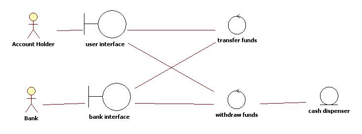

About this task
You can find the mandatory assignment description in here. On this, you work on together as a group and return as a PDF for grading using the associated Moodle assignment link.
Mandatory Assignment (topic 4, submit via Moodle as PDF)
General requirements
Max 2-4 pages (+1 cover page). Please concentrate on the diagrams and then explaining the rationale behind their design.
Submit this assignment via Moodle as PDF (see the exercises and assignment page for the return link).
Assignment description
This week's assignment involves analyzing a system description and creating a series of UML diagrams based on the description. We start with describing use case diagrams, proceed to conceptual modeling, and finally analyze where the users interact with technological objects through BCE modeling.
We use "Use Case Driven Object Modeling with UML: Theory and Practise" ( https://doi-org.ezproxy.cc.lut.fi/10.1007/978-1-4302-0369-8 ) as our step by step guide. It is an older edition, but the steps are well described and very clear, compared to some alternative books.
First step, read the deliverables listed and then then case description. Then, create a simplified domain model based on the description written in Chapter 2.
Second step, read Chapter 3 and draw an use case diagram. You can also review a visual paradigm tutorial on use case diagrams.
Third step, review Chapter 5 and use the robustness analysis method to create a Boundary - Entity - Controller diagram. A BCE diagram (called a robustness diagram) is a way of analyzing and identifying which kind of technological objects or interfaces the user works with.
Critical advice: Do not make the BCE diagram too complex. For example, you can have a level of detail similar to a diagram describing an ATM (originally by Pearce from SJSU), presented as an example below.

Motivation: The author of the book expresses the need for a BCE analysis (also called robustness analysis) as follows: "To get from use cases to detailed design (and then to code), you need to link your use cases to objects. The technique we describe in this chapter, robustness analysis, helps you to bridge the gap from analysis to design by doing exactly that. In a nutshell, it’s a way of analyzing your use case text and identifying a first-guess set of objects for each use case. These are classified into boundary objects, entity objects, and controllers (which are often more like functions than objects)."
Case description
In this case you and your team are tasked to design an UML design for a single use case from either EnviroSense or AudioNow system.
Select and define one of these use cases from EnviroSense (if you are working on that one): Uploading a sensor observation with hand-held measuring device, triggering a download from all remote sensors that are online, or refreshing an analytics view from the database as a batch process.
Select and define one of these use cases from AudioNow (if you are working on that one): Buying physical merchandise, buying a podcast subscription, or joining a shared listening experience online room.
Deliverables
Following the instructions above, draw a 1) simplified domain model, 2) use case diagram, and 3) BCE diagram (robustness diagram). Describe the design rationale and what happens in each diagram in your own words. Use complete sentences, add captions to your figures, and pay attention to flow and readability of your report.Include the Declaration of AI Use at the end of the assignment. The declaration is required for grading the work whether you used AI tools or not.
In a separate chapter at the end of the document, list the following.
1) Name all AI systems that were used in the development of the contents of this document, and for each
2) How and where they were used (illustrations, proofreading, getting ideas for text, to generate diagrams etc.) or
3) Clearly state that no AI assistance or tools were used in this assignment.
This Declaration is mandatory part of the submission and leaving it out means that the work is incomplete and should not be graded. Declaring that no AI was used in the development of the document, but getting high number in TurnItIn AI check is also a valid grounds for failing the work just by itself.